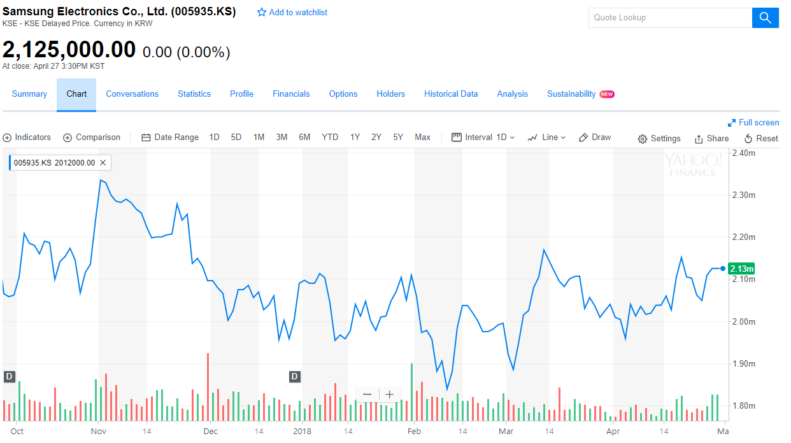

컴퓨터를 통해 인터넷에서 많은 정보들을 쉽게 접할 수 있는 21세기에 빅데이터 라는 기술은 매우 매력적 이었다. 사회, 경제, 문화적 여러 영역에 걸쳐 개개인이 원하는 많은 정보를 어디서든 구할 수 있고, 구한 정보들을 이용하여 쇼핑몰에서는 소비자의 구매성향을 통해 관심사를 파악하고, 축구경기의 경향과 선수들의 컨디션 정보들을 통해 중요한 경기의 승패를 예측하는 등의 활용성을 보이고 있다.
특히 많은 자본의 유통과 변동이 있는, 주가 예측 분야에서 빅 데이터는 머신 러닝을 통해 주가의 변동성을 파악하는데 필요해졌다. 이렇게 국내외 여러 분야에서 빅 데이터의 활용성에 관심과 필요가 늘어 감에 따라 자연스럽게 우리 팀은 이 분야에 대해 관심을 가지게 되었다.
이러한 이유로 우리 팀은 학교의 교육과정에서 얻을 수 없는 빅 데이터와 이를 이용한 머신 러닝의 실무적인 활용 방식에 대해 알아 보고자 지원을 하게 되었다.
이번 프로젝트를 통해 실제 나와 있는 주가 데이터를 이용해 10일뒤 또는 15일뒤의 주가데이터의 상승과 하락을 예측 할 수 있는 모델을 머신 러닝의 한 종류인 딥 러닝을 이용하여 구현 시킨다. 여러 논문을 찾아보며 기존에 구현 되어 있던 ‘딥 러닝을 이용한 주가예측 모델’을 기반으로 조금 더 나은 정확도를 위해 데이터 전처리와 모델의 합성 등을 추가 하였다.
더 자세하게는 딥러닝(Neural net) 알고리즘인 MLP(Multi Layer Perceptron), CNN(Convolution Neural Network), RNN(Recurrent Neural Network)을 이용한 주가 예측 모델에 대해 연구한 기존논문 “ 이지훈 , 딥러닝을 이용한 주가 예측 모델 , 학위논문 , 숭실대 학교 , 2016” 을 기반으로 딥러닝 모델을 생성한다.
그러나 이 모델들은 정확도가 50~52%로 매우 낮기 때문에 주가 데이터를 기술적 지표로 전처리 하는 부분에서 상세함을 더하고 정 확도를 높이기 위해 딥러닝 알고리즘 에 대해 연구한 후, 적용 시켜 보았다.
